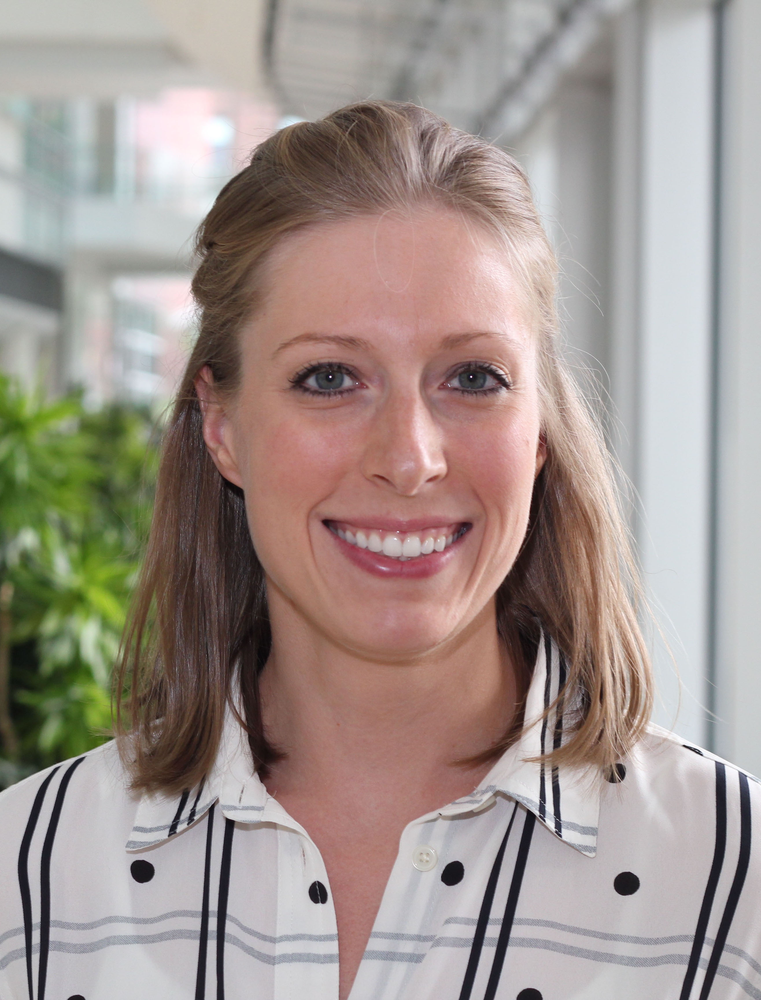

Danielle Rux, PhD
Danielle completed undergraduate work in Biochemistry at the University of Wisconsin–La Crosse, where she was also a competitive swimmer. She discovered her passion for scientific research while working as a research technician at the University of Minnesota before pursuing her PhD at the University of Michigan. Her doctoral research led to the discovery that HOX genes, transcription factors essential for embryonic patterning, are reactivated following fracture injury to promote skeletal regeneration in adult animals. During her postdoctoral training at the Children’s Hospital of Philadelphia, she focused on postnatal synovial joint development. In 2023, she launched her independent research program at UConn Health. Outside the lab, Danielle enjoys swimming, running, biking, and spending time with her dog, Lucy!